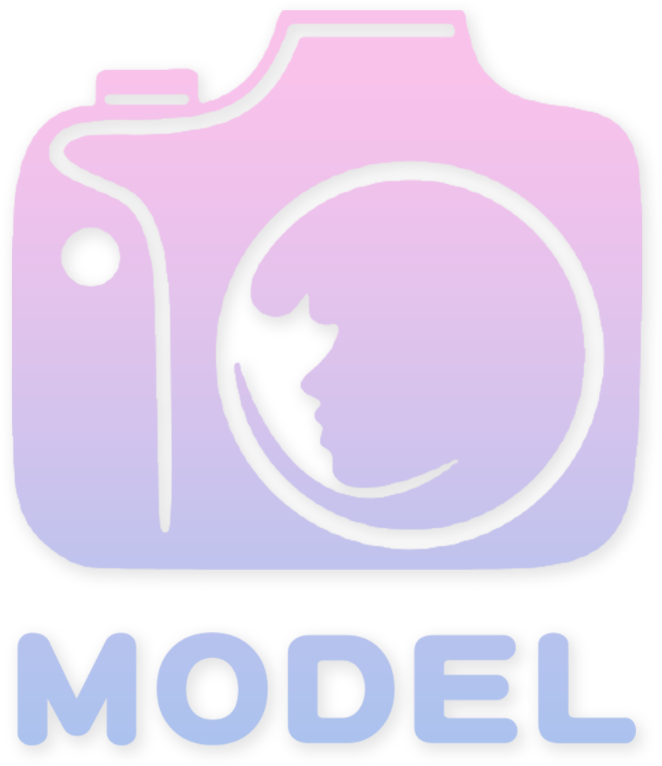

<div class="row">
  <div class="col-auto col-md-2 align-self-center text-center">
    <a href="index.html" title="外拍模特">
      
    </a>
  </div>
  <div class="col-md col-auto col-md align-self-center">
    <nav class="nav">
      <ul>
        <li><a href="#a1">NEW</a></li>
        <li><a href="#a2">熱門</a></li>
        <li>
          <a href="javascript:;">
            地區<i class="bi bi-caret-down-fill"></i>
          </a>
          <ul>
            <li><a href="list.html?type=taipei">北部北部北</a></li>
            <li><a href="list.html?type=taichung">中部</a></li>
            <li><a href="list.html?type=tainan">南部</a></li>
            <li><a href="list.html?type=taidong">東部</a></li>
          </ul>
        </li>
      </ul>
    </nav>
  </div>
  <div class="col-2 d-md-none align-self-center memberBtnIcon">
    <i class="bi bi-person-circle"></i>
  </div>
  <div class="col-md align-self-center memberBtn">
    <nav class="nav text-end">
      <ul>
        <li><a href="member.html">使用者名稱</a></li>
        <li><a href="#">登出</a></li>
        <li><a href="#" class="dark">DARK</a></li>
      </ul>
    </nav>
  </div>
</div>

<script>
  $('.nav li ').hover(function () {
    $(this).find('ul').stop().slideToggle(350);
  });

  $('.memberBtnIcon').click(() => {
    $('.memberBtn').toggleClass('vis');
  });


  //調整暗色版本
  $('.dark').click(function () {

    let logoSrc = $('#header').find('img');

    $('html').toggleClass('dark');

    if ($('html').hasClass('dark')) {
      logoSrc.attr('src', './images/d-LOGO.png');
    } else {
      logoSrc.attr('src', './images/LOGO.png');
    }

  });
</script>